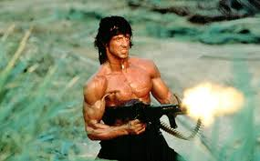
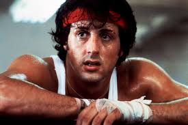
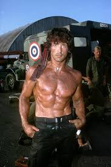

Biography
Sylvester Stallone, born on July 6, 1946, in New York City, is one of the most iconic action stars in Hollywood history. Known for his roles in Rocky and Rambo, Stallone has built a legacy as a versatile actor, writer, and director. He rose to fame in the 1970s with his portrayal of the underdog boxer Rocky Balboa, which won him an Academy Award nomination for Best Original Screenplay.
Famous Movies
- Rocky (1976) - The groundbreaking film that launched Stallone's career as the underdog boxer, Rocky Balboa.
- Rambo: First Blood (1982) - Stallone portrays John Rambo, a troubled Vietnam War veteran who fights to survive in the wilderness.
- Rocky IV (1985) - One of the most iconic films in the Rocky series, where Rocky faces off against the Soviet champion Ivan Drago.
- The Expendables (2010) - An action-packed ensemble film starring Stallone, Arnold Schwarzenegger, and other action legends.
- Creed (2015) - Stallone returns as Rocky Balboa, mentoring the son of his late friend and rival, Apollo Creed.
Gallery
Here are some of Sylvester Stallone's most memorable moments:


